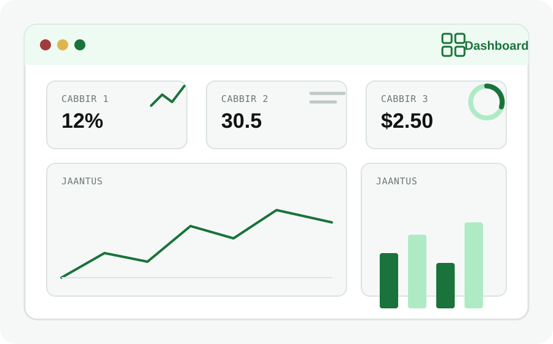
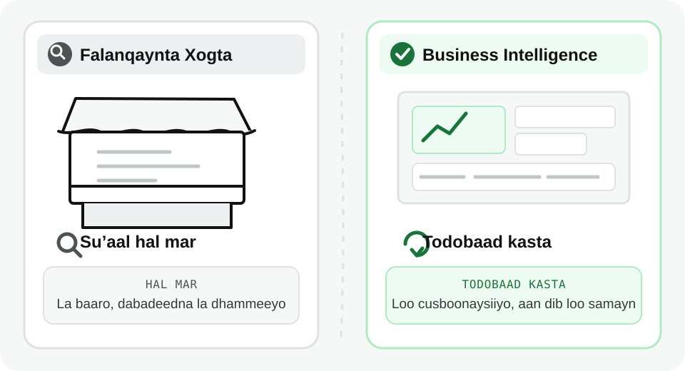
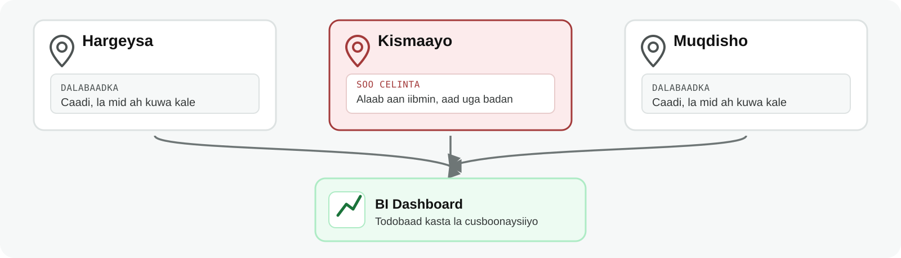

Data Analysis iyo Business Intelligence
Waxaad awoodi doontaa inaad sharaxdo waxa ay kala yihiin Data Analysis iyo Business Intelligence (BI), waxa uu mid walba qabto, iyo meelaha ay wadaagaan.
Dulmar
Milkiile dukaan ayaa ogaaday in hal alaab toddobaad kasta dukaanka ka dhammaado, halka alaab kale ay khaanadda iska taallo. Wuxuu rabaa inuu ogaado sababta, sidoo kalena wuxuu doonayaa hab fudud oo uu bil kasta iibka ugu hubiyo isaga oo aan mar kasta faylal badan baarin.
Halkaas ayay ka soo galaan Data Analysis iyo Business Intelligence (BI). Labaduba waxay xogta u adeegsadaan inay dadka ka caawiyaan fahamka xaaladda iyo goʼaan qaadashada, gaar ahaan ganacsiga.
Waa maxay Data Analysis?
Data Analysis waa habka xogta loo baaro, loo nadiifiyo, qaabkeeda loo beddelo, loona fasiro si looga helo macluumaad faaʼiido leh oo lagu gaari karo go'aan.
Waa maxay Business Intelligence (BI)?
Business Intelligence (BI) wuxuu diiradda saaraa in xogta loo beddelo dashboards, warbixinno, iyo cabbirro (metrics) ka caawiya hayʼadaha ama shirkadaha inay la socdaan waxqabadka oo ay goʼaanno gaaraan.
Dashboard waa shaashad kooban oo muujisa cabbirro iyo jaantusyo muhiim ah.

KPI (key performance indicator): cabbir lagu ogaado horumarka laga gaaray yool
Dashboards xogta siyaabo kala duwan loogu eegi karo
Warbixinno joogto ah
Faham muhiim ah oo kooxaha ganacsigu si fudud u heli karaan
Power BI iyo Tableau waa qalab inta badan lagu isticmaalo BI.
Sidee ayay Isugu Xirmaan?
DA iyo BI qaybo badan ayay wadaagaan.

Farqiga ugu muuqda waa inta jeer ee shaqada la qabto. Falanqaynta xogtu badanaa waxay ka jawaabtaa suʼaal hal mar la weydiiyey. BI wuxuu diyaariyaa hab jawaabta suʼaashaas toddobaad kasta loo cusboonaysiiyo, iyada oo aan qofku shaqada oo dhan dib u samayn.
Tusaale
Ganacsade jumlo iibiya oo alaab siiya dukaamo ku yaal Hargeysa, Kismaayo, iyo Muqdisho. Wuxuu rabaa inuu ogaado sida ganacsigu uga socdo magaalo kasta.

Falanqeeye xog (data analyst) ayaa baaraya dalabaadkii lixdii bilood ee la soo dhaafay. Wuxuu ogaaday in dukaamada Kismaayo ay dalbadaan tiro la mid ah kuwa kale, laakiin ay soo celiyaan alaab aan iibmin oo aad uga badan
BI dashboard ayaa toddobaad kasta muujinaya dalabaadka, alaabta la soo celiyey, iyo alaabta ugu iibka badan magaalo kasta. Sidaas ayuu maamuluhu bisha xigta xogta cusub u arki karaa isaga oo aan qof weydiin
Falanqeeyuhu wuxuu ka jawaabay suʼaal gaar ah. Dashboard-kuna wuxuu hubiyey inaan loo baahnayn in suʼaashaas mar kasta dib la isku weydiiyo.